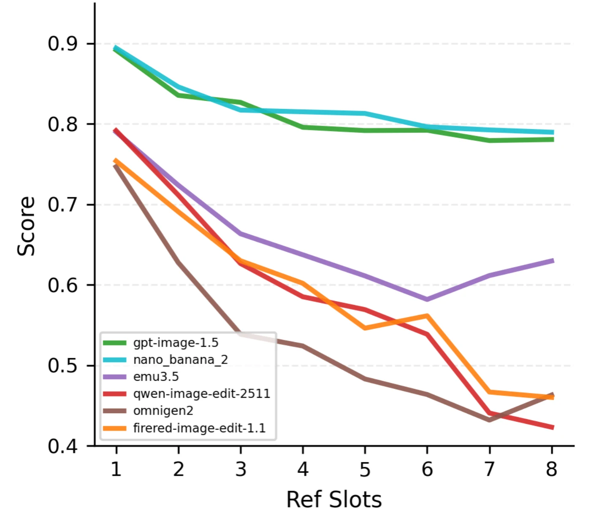
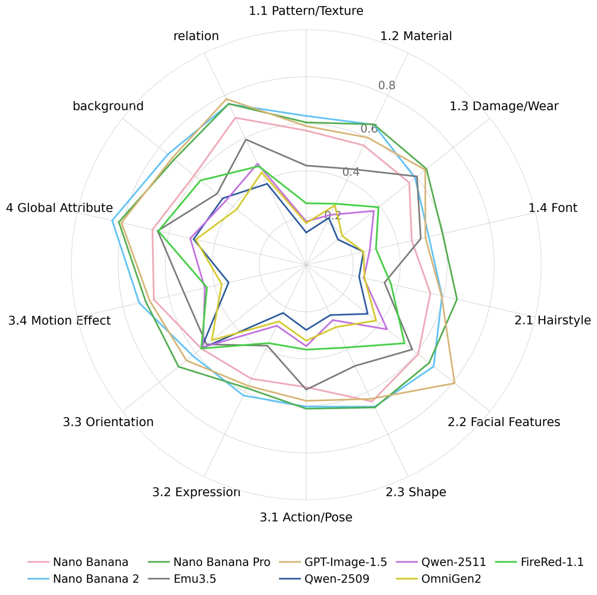
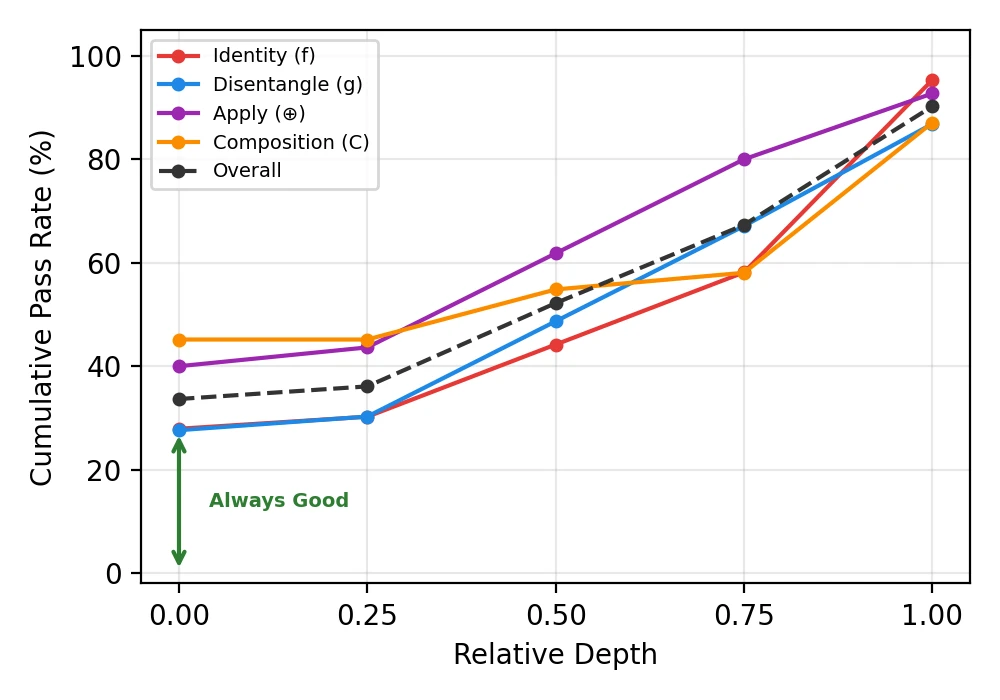

Incomplete coverage
Fixed task categories cannot keep pace with the combinatorial ways entities, attributes, relations, layouts, and styles can be mixed.
Multi-reference generation is combinatorial. Its evaluation should be compositional. TRACE-Bench replaces coarse task labels with four atomic operators and turns every prompt into a traceable formula.
Shanghai Jiao Tong University
Abstract
Existing multi-reference benchmarks rely on predefined task types, producing fragmented coverage, uncontrolled complexity, and opaque holistic scores. TRACE-Bench instead represents each prompt as a compositional formula over four reusable operations— Anchor (f), Disentangle (g), Apply (⊕), and Compose (C).
The benchmark comprises approximately 1,600 cases spanning slot counts 1–8, instantiated from 631 formula templates and around 4,000 reference images. The same formula drives capability-aligned scoring and diagnostic trees. Across nine leading models, attribute disentanglement and binding—not scene-level composition—emerge as the primary bottlenecks.
Motivation
“Subject composition” or “style transfer” may describe a final task, but neither says which reference operation was required—or which one failed.
Fixed task categories cannot keep pace with the combinatorial ways entities, attributes, relations, layouts, and styles can be mixed.
A single score cannot tell whether a model missed the subject, extracted the wrong attribute, or bound it to the wrong target.
Without a common structure, the difficulty of cases from different scenarios cannot be systematically controlled or compared.
Benchmark positioning
TRACE-Bench makes the same compositional structure govern case construction and evaluation, while requiring precise grounding inside information-rich references.
Swipe horizontally to inspect all capabilities →
| Benchmark | Split by | Case basis | Aligned evaluation | Hard grounding |
|---|---|---|---|---|
| OmniContext | Tasks | Subtasks | × | × |
| MultiBanana | Tasks | Reference-count tasks | × | × |
| MICON-Bench | Tasks | Task templates | × | ✓ |
| MacroBench | Tasks | Long-context tasks | ✓ | × |
| TRACE-Bench (ours) | Capabilities | Compositional formulas | ✓ | ✓ |
What task is this?What reference-dependent capabilities does this prompt
require?
Capability decomposition
The same symbolic structure organizes prompt construction, complexity control, evaluation questions, and downstream diagnosis.
01 · Identity
Locate a referenced entity and preserve its identity-defining visual information.
f(I, e)
02 · Attribute fidelity
Extract a referenced attribute while separating it from its original carrier.
g(I, E, a)
03 · Binding
Bind the extracted attribute to the designated entity, exclusively and naturally.
Te ⊕ g
04 · Composition
Arrange multiple contents under spatial, relational, or global constraints.
C(E₁, …, Eₙ)
Example · slot 4
C(f₁, Te ⊕ g₁ ⊕ g₂) ⊕ gglobal
One anchored entity and three disentangled reference terms yield slot(F) = |f| + |g| = 4. Text-only content remains in natural language. Slot count measures reference-conditioned structure; clutter, attribute granularity, and reference ambiguity remain additional sources of difficulty.
Benchmark
References are filtered, tagged, balanced, and instantiated through formula templates before being realized as natural-language prompts.
Collect complementary artistic and real-world sources, then apply source-specific quality and safety filtering.
Ground entities and organize attributes into Appearance, Form, Dynamics, and Global layers.
Favor underrepresented categories and attributes, manually inspect quality, and supplement rare cases.
Sample formulas, pair them with references, and realize coherent prompts that bind every image to a target.
Quality control
Reference images and realized prompts pass separate balancing, automated filtering, and manual inspection stages before entering the benchmark.
Prompt audit. GPT-5.4 filters out 4.3% of constructed prompts; manual review removes a further 9% of the remaining cases.
Operator-aligned evaluation
Instead of asking whether the full image is simply “good,” TRACE-Bench turns each operator instance into explicit binary questions about its intended capability.
Entity existence and appearance consistency with the reference.
Attribute presence and consistency with its reference source.
Carrier integrity, attribute exclusivity, and natural integration.
Coexistence, relation satisfaction, spatial coherence, and no duplication or leakage.
Human-alignment audit
On 200 sampled benchmark cases, each generated by both Nano Banana 2 and Emu3.5 (400 outputs in total), four VLM judges were compared against human checklist annotations. Individual judges match 85.4–88.4% of checklist decisions.
88.6%ensemble agreement
Full-benchmark judge: Gemini 2.5 Pro offers a practical reliability–cost trade-off; the ensemble is a higher-confidence option when added evaluation cost is acceptable. Agreement remains empirical: judge choice and ambiguous visual evidence can still affect individual decisions.
Swipe horizontally to inspect all agreement metrics →
| Judge | Pear. ↑ | Spear. ↑ | MAE ↓ | Agreement ↑ |
|---|---|---|---|---|
| Gemini 3 Pro | 0.608 | 0.613 | 0.152 | 86.8% |
| Gemini 2.5 Pro used | 0.554 | 0.537 | 0.173 | 85.4% |
| GPT-5.1 | 0.569 | 0.558 | 0.162 | 88.1% |
| GPT-5.4 | 0.580 | 0.542 | 0.156 | 88.4% |
| Ensemble | 0.662 | 0.604 | 0.153 | 88.6% |
Leaderboard
Nine model versions are evaluated over the full benchmark. Scores are averaged across slot levels 1–8; higher is better. Results are a snapshot of these versions and should be re-evaluated as systems change.
Swipe horizontally to inspect all model metrics →
| Model | Anchor f | Disentangle g | Apply ⊕ | Compose C | Average | CLIP Sim |
|---|---|---|---|---|---|---|
| Proprietary models | ||||||
| GPT-Image-1.5 | 0.7649 | 0.6890 | 0.7541 | 0.9259 | 0.8118 | 0.2969 |
| Nano Banana | 0.7650 | 0.6786 | 0.7631 | 0.8975 | 0.7981 | 0.2867 |
| Nano Banana 2 best avg. | 0.7724 | 0.7384 | 0.7989 | 0.9100 | 0.8205 | 0.2944 |
| Nano Banana Pro | 0.7488 | 0.7148 | 0.7869 | 0.9214 | 0.8172 | 0.2962 |
| Open-source models | ||||||
| Emu3.5 best open | 0.6587 | 0.4982 | 0.5434 | 0.7871 | 0.6561 | 0.2917 |
| FireRed Image Edit 1.1 | 0.6348 | 0.4703 | 0.4258 | 0.7218 | 0.5889 | 0.2603 |
| Qwen-Image-Edit-2509 | 0.5210 | 0.3755 | 0.3282 | 0.7627 | 0.5483 | 0.2742 |
| Qwen-Image-Edit-2511 | 0.6009 | 0.4097 | 0.3742 | 0.7776 | 0.5858 | 0.2758 |
| OmniGen2 | 0.5635 | 0.3719 | 0.3195 | 0.7070 | 0.5348 | 0.2693 |
It achieves the strongest Anchor, Disentangle, Apply, and average scores.
Even the best Disentangle score is far from the normalized ideal of 1.
Models can arrange plausible scenes while still extracting or binding the wrong content.


Diagnostic trees
TRACE-Bench recursively removes reference-conditioned complexity and compares parent and child cases, revealing whether a failure is intrinsic or introduced by interference.
Aggregate diagnosis · 200 cases
For Emu3.5, joint-composition interference is the largest localized source for Anchor, Disentangle, and Apply: the model often preserves isolated reference content, then loses it when multiple reference-conditioned entities are combined.
38.5%joint-composition interference overall
Compose behaves differently: global-reference interference is its largest localized failure source at 29.0%.
Swipe horizontally to inspect every operator →
| Outcome / source | Anchor f | Disentangle g | Apply ⊕ | Compose C | Overall |
|---|---|---|---|---|---|
| Stable success | 27.9% | 27.6% | 38.9% | 45.2% | 33.7% |
| Persistent failure | 4.7% | 13.2% | 7.3% | 12.9% | 9.8% |
| Global reference | 14.0% | 10.5% | 9.1% | 29.0% | 13.7% |
| Joint composition | 48.8% | 43.4% | 41.1% | 9.7% | 38.5% |
| Relation / attribute | 4.7% | 5.3% | 3.6% | 3.2% | 4.4% |
Human validation
82.6%Measured on diagnostic trees for 200 Emu3.5 cases, with humans independently identifying the node where each failure originated.

What the tree separates
Applications
TRACE-Bench does not need a separate ontology of application names. Practical settings are particular instantiations of the shared compositional language.
Virtual Try-On
f(person) ⊕ gattach,1 ⊕ gattach,2 ⊕ ···
Preserve the target identity while binding one or more garments and their reference-specific details.
Group Photo Layout
C(f₁, f₂, …, fₙ) ⊕ glayout
Preserve multiple identities while satisfying a shared arrangement without dropping or duplicating subjects.
Citation
Accepted to ACM Multimedia 2026. The preprint is available as arXiv:2608.16765.
@inproceedings{wang2026tracebench,
title = {{TRACE-Bench}: Decomposing and Diagnosing
Multi-Reference Image Generation},
author = {Wang, Haoran and Ma, Chaofan and
Yi, Ran and Ma, Lizhuang},
booktitle = {Proceedings of the 34th ACM International
Conference on Multimedia},
year = {2026}
}